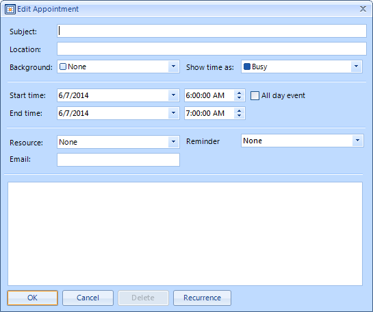

Binding to Custom Fields
RadScheduler has full support for binding to custom fields i.e. RadScheduler can be bound to an email field in your data source. The process
consists of five steps:
Add your custom field to your data source.
Add a custom appointment class that stores this additional data. Note: The easiest way to do that is to inherit from the Appointment class that RadScheduler uses by default.
[C#]
public class AppointmentWithEmail : Appointment
{
public AppointmentWithEmail()
: base()
{
}
private string email = string.Empty;
public string Email
{
get
{
return this.email;
}
set
{
if (this.email != value)
{
this.email = value;
this.OnPropertyChanged("Email");
}
}
}
}
[VB.NET]
Public Class AppointmentWithEmail
Inherits Appointment
Public Sub New()
MyBase.New()
End Sub
Private _email As String = String.Empty
Public Property Email() As String
Get
Return Me._email
End Get
Set(ByVal value As String)
If Me._email <> value Then
Me._email = value
Me.OnPropertyChanged("Email")
End If
End Set
End Property
End Class
- Implement a simple appointment factory and inherit from the default appointment dialog and add some input controls and logic for your custom field. The easiest way to do the latter is to create a form in Visual Studio that inherits from the standard *Edit Appointment *dialog, then open it in the designer, and add your custom UI. The extended form from the example is shown on the screenshot below (notice the Email field on it): 
[C#]
public class CustomAppointmentFactory : IAppointmentFactory
{
#region IAppointmentFactory Members
public IEvent CreateNewAppointment()
{
return new AppointmentWithEmail();
}
[VB.NET]
Public Class CustomAppointmentFactory
Implements IAppointmentFactory
#Region "IAppointmentFactory Members"
Public Function CreateNewAppointment() As IEvent Implements IAppointmentFactory.CreateNewAppointment
Return New AppointmentWithEmail()
End Function
#End Region
End Class
[C#]
public partial class CustomAppointmentEditForm : EditAppointmentDialog
{
public CustomAppointmentEditForm()
{
InitializeComponent();
}
protected override void LoadSettingsFromEvent(IEvent ev)
{
base.LoadSettingsFromEvent(ev);
AppointmentWithEmail appointmentWithEmail = ev as AppointmentWithEmail;
if (appointmentWithEmail != null)
{
this.txtEmail.Text = appointmentWithEmail.Email;
}
}
protected override void ApplySettingsToEvent(IEvent ev)
{
AppointmentWithEmail appointmentWithEmail = ev as AppointmentWithEmail;
if (appointmentWithEmail != null)
{
appointmentWithEmail.Email = this.txtEmail.Text;
}
base.ApplySettingsToEvent(ev);
}
protected override IEvent CreateNewEvent()
{
return new AppointmentWithEmail();
}
}
[VB.NET]
Public Class CustomAppointmentEditForm
Public Sub New()
InitializeComponent()
End Sub
Protected Overrides Sub LoadSettingsFromEvent(ByVal ev As IEvent)
MyBase.LoadSettingsFromEvent(ev)
Dim appointmentWithEmail As AppointmentWithEmail = TryCast(ev, AppointmentWithEmail)
If appointmentWithEmail IsNot Nothing Then
Me.txtEmail.Text = appointmentWithEmail.Email
End If
End Sub
Protected Overrides Sub ApplySettingsToEvent(ByVal ev As IEvent)
Dim appointmentWithEmail As AppointmentWithEmail = TryCast(ev, AppointmentWithEmail)
If appointmentWithEmail IsNot Nothing Then
appointmentWithEmail.Email = Me.txtEmail.Text
End If
MyBase.ApplySettingsToEvent(ev)
End Sub
Protected Overrides Function CreateNewEvent() As IEvent
Return New AppointmentWithEmail()
End Function
End Class
Note that the inherits clause in VB is in the form designer
[VB.NET]
<Global.Microsoft.VisualBasic.CompilerServices.DesignerGenerated()> _
Partial Class CustomAppointmentEditForm
Inherits Telerik.WinControls.UI.Scheduler.Dialogs.EditAppointmentDialog
- You should assign the custom AppointmentFactory to RadScheduler:
[C#]
this.radScheduler1.AppointmentFactory = new CustomAppointmentFactory();
[VB.NET]
Me.RadScheduler1.AppointmentFactory = New CustomAppointmentFactory()
- You need to handle the AppointmentEditDialogShowing event of RadScheduler in order to replace the default appointment dialog with a custom one. You will also have to give an instance of your appointment factory to the RadScheduler so it can create instances of your custom appointment class:
[C#]
private IEditAppointmentDialog appointmentDialog = null;
protected override void OnLoad(EventArgs e)
{
base.OnLoad(e);
this.radScheduler1.AppointmentFactory = new CustomAppointmentFactory();
this.radScheduler1.AppointmentEditDialogShowing += new EventHandler<AppointmentEditDialogShowingEventArgs>(radSchedulerDemo_AppointmentEditDialogShowing);
}
void radSchedulerDemo_AppointmentEditDialogShowing(object sender, AppointmentEditDialogShowingEventArgs e)
{
if (this.appointmentDialog == null)
{
this.appointmentDialog = new CustomAppointmentEditForm();
}
e.AppointmentEditDialog = this.appointmentDialog;
}
[VB.NET]
Private appointmentDialog As IEditAppointmentDialog = Nothing
Protected Overrides Sub OnLoad(ByVal e As EventArgs)
MyBase.OnLoad(e)
Me.RadScheduler1.AppointmentFactory = New CustomAppointmentFactory()
AddHandler RadScheduler1.AppointmentEditDialogShowing, AddressOf radSchedulerDemo_AppointmentEditDialogShowing
End Sub
Private Sub radSchedulerDemo_AppointmentEditDialogShowing(ByVal sender As Object, ByVal e As AppointmentEditDialogShowingEventArgs)
If Me.appointmentDialog Is Nothing Then
Me.appointmentDialog = New CustomAppointmentEditForm()
End If
e.AppointmentEditDialog = Me.appointmentDialog
End Sub
- Finally, you have to add a mapping for your custom field to the appointment mapping info. Note that the same appointment factory instance is assigned to the event provider.
[C#]
SchedulerBindingDataSource dataSource = new SchedulerBindingDataSource();
dataSource.EventProvider.AppointmentFactory = this.radScheduler1.AppointmentFactory;
AppointmentMappingInfo appointmentMappingInfo = (AppointmentMappingInfo)dataSource.EventProvider.Mapping;
appointmentMappingInfo.Mappings.Add(new SchedulerMapping("Email", "Email"));
[VB.NET]
Dim dataSource As New SchedulerBindingDataSource()
dataSource.EventProvider.AppointmentFactory = Me.RadScheduler1.AppointmentFactory
Dim appointmentMappingInfo As AppointmentMappingInfo = DirectCast(dataSource.EventProvider.Mapping, AppointmentMappingInfo)
appointmentMappingInfo.Mappings.Add(New SchedulerMapping("Email", "Email"))